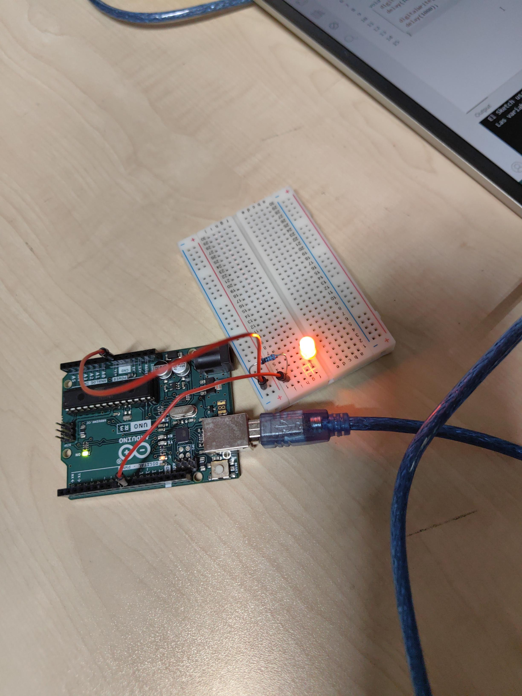

Semana 1: Introducción a CSS
Hoy aprendimos sobre selectores y cómo cambiar el color de los textos. Aquí puedes ver mi documento sobre Arduino:
Semana 2: Box Model
Entendiendo el margen, relleno y bordes de los elementos.

Semana 3 (Parte 1): Simulación de Arduino
Aquí puedes ver el primer video de la semana:
Semana 4 (Parte 2): Continuación de la simulación
Aquí puedes ver el segundo video de la semana:
Semana 5: Segunda simulación de Arduino (Circuito con LED RGB)
Aquí puedes ver el funcionamiento y la ejecución en tiempo real de la simulación programada en Tinkercad:
Semana 6
Semáforo
Semana 7
Espacio reservado para las actividades de la semana 7.